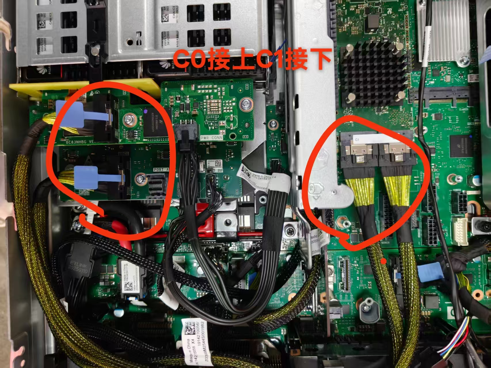

阵列卡(raid卡)
raid卡分为扣卡和标卡两种
raid扣卡
扣卡为通过厂商自定义的插槽进行连接，直接由螺丝和插槽连接在主板上

其中本图中的raid扣卡与主板用特殊引脚连接，并使用两颗螺丝固定并按照图中的线缆固定到4*2.5后置背板模组上
raid标卡
标卡是通过PCIe接口通过背板模组进行连接的，通过金手指连接
raid卡分为扣卡和标卡两种
扣卡为通过厂商自定义的插槽进行连接，直接由螺丝和插槽连接在主板上

其中本图中的raid扣卡与主板用特殊引脚连接，并使用两颗螺丝固定并按照图中的线缆固定到4*2.5后置背板模组上
标卡是通过PCIe接口通过背板模组进行连接的，通过金手指连接